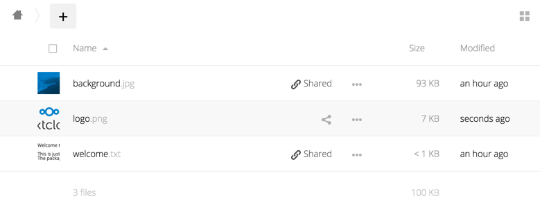

Previews configuration
The Nextcloud thumbnail system generates previews of files for all Nextcloud apps that display files, such as Files and Gallery.
The following image shows some examples of previews of various file types.

By default, Nextcloud can generate previews for the following filetypes:
Images files
Cover of MP3 files
Text documents
Note
Technically Nextcloud can also generate the previews of other file types such as PDF, SVG or various office documents. Due to security concerns those providers have been disabled by default and are considered unsupported. While those providers are still available, we discourage enabling them, and they are not documented.
Parameters
Please notice that the Nextcloud preview system comes already with sensible defaults, and therefore it is usually unnecessary to adjust those configuration values.
But deemed necessary, following changes have to be made in config/config.php file. As a best practice, take a backup of this config file before making a lot of changes.
Disabling previews:
Under certain circumstances, for example if the server has limited resources, you might want to consider disabling the generation of previews. Note that if you do this all previews in all apps are disabled, including the Gallery app, and will display generic icons instead of thumbnails.
Set the configuration option enable_previews to false:
<?php
'enable_previews' => false,
Maximum preview size:
There are two configuration options to set the maximum size of a preview.
<?php
'preview_max_x' => null,
'preview_max_y' => null,
By default, both options are set to null. ‘Null’ is equal to no limit. Numeric values represent the size in pixels. The following code limits previews to a maximum size of 100×100px:
<?php
'preview_max_x' => 100,
'preview_max_y' => 100,
‘preview_max_x’ represents the x-axis and ‘preview_max_y’ represents the y-axis.
Maximum scale factor:
If a lot of small pictures are stored on the Nextcloud instance and the preview system generates blurry previews, you might want to consider setting a maximum scale factor. By default, pictures are upscaled to 10 times the original size:
<?php
'preview_max_scale_factor' => 10,
If you want to disable scaling at all, you can set the config value to ‘1’:
<?php
'preview_max_scale_factor' => 1,
If you want to disable the maximum scaling factor, you can set the config value to ‘null’:
<?php
'preview_max_scale_factor' => null,
JPEG quality setting:
Default JPEG quality setting for preview images is ‘90’. Change this with:
occ config:app:set preview jpeg_quality --value="60"